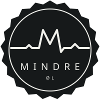
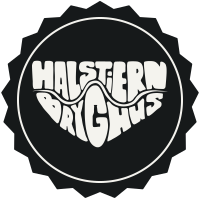
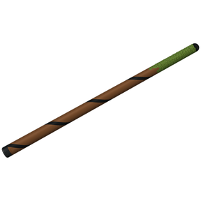
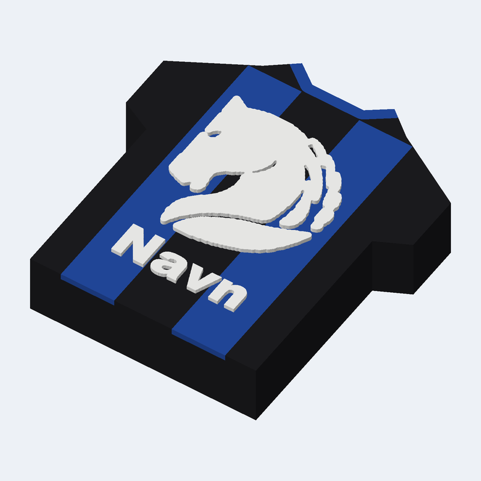

Tre forslag til en 3D-printet ølbrik med EKG-logo.

Fire forslag til en 3D-printet ølbrik formet som kronkapsel med Halstiern Bryghus' logo.

Tre forslag til en 3D-printet tryllestav på 20 cm i sort, brun og mosgrøn.

3D-printet magnet formet som en HSK-trøje med hest og spillerens navn. Magneten er gemt inde i trøjen.